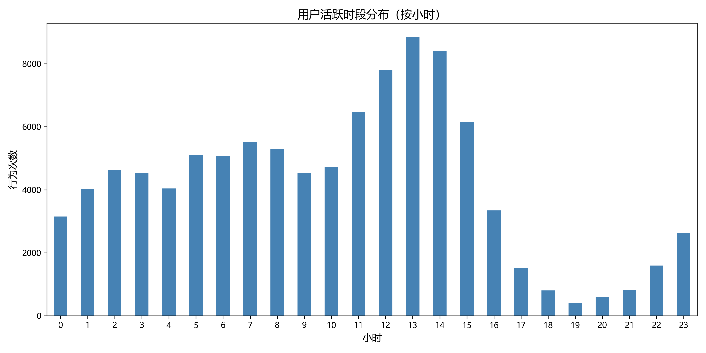
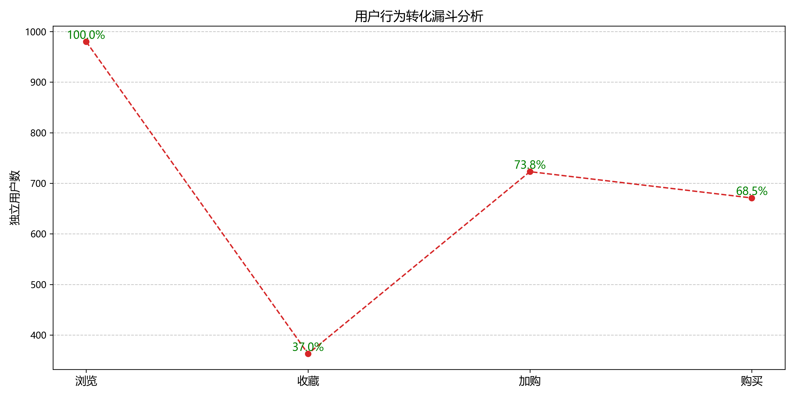

<h2>用户行为分析报告</h2>
<h3>核心指标</h3>
<ul>
  <li>高峰时段：13时</li>
  <li>最终转化率：68.5%</li>
</ul>

<h3>可视化图表</h3>
<figure>
  
  <figcaption>用户活跃时段分布（按小时）</figcaption>
</figure>

<figure>
  
  <figcaption>用户行为转化漏斗分析</figcaption>
</figure>

<h3>业务优化建议</h3>
<ol>
  <li><strong>高峰时段运营</strong>：在{hourly_activity.idxmax()}时增加促销活动，提升用户粘性。</li>
  <li><strong>转化率优化</strong>：针对收藏→加购流失用户，推送个性化优惠券（如满减/赠品）。</li>
  <li><strong>高价值用户维护</strong>：对RFM评分高的用户提供专属客服和优先体验新功能。</li>
</ol>
